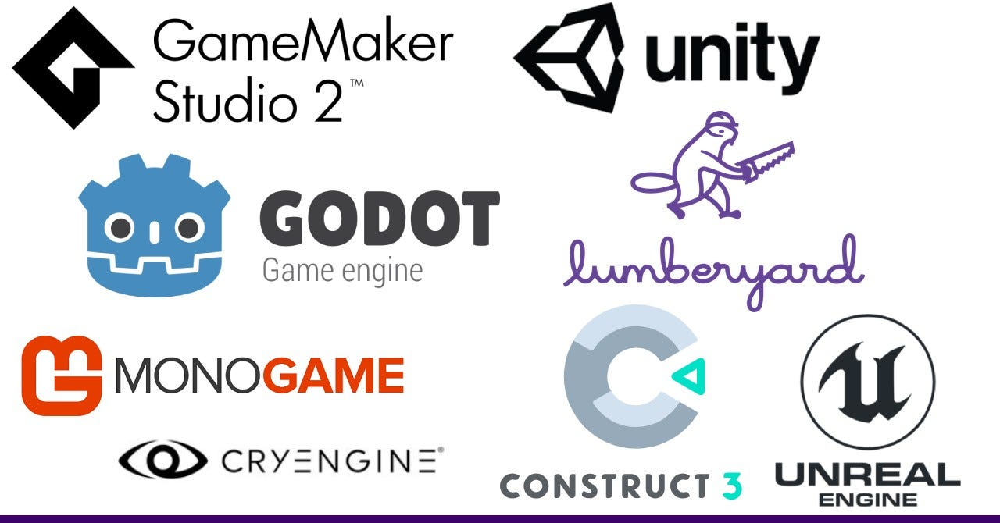

Question of choice of Game Engine
Third-Party or Proprietary


This is the first article of the journal of game development activities of Godda Game this bootstrap Game studio seeking to chip creative and educative gaming experience and game technologies that enhance the experience of gamers and increase the productivity of games studios. To say that Godda Game is into the Gaming Technology simply tech-enabled. This first journal is about this operations management game for the airline industry I was writing about in this article and is about tech choice to be made about the development of this game experience that Godda Game want to be a fun game that could teach operations management to people interested in MBA materials. The question that I, the only team member of Godda Game am asking is about choosing an already chipped engine like Real Engine, Unity, or why not Pygame or by Just building from scratch a game engine specific to this genre of games using frameworks like SFML? then asked professionally the question is should we go for a Proprietary Game Engine or Third-party Game Engine?
Each of these two path of choice has its own benefits and desavantage then it is important to go into these benefits and disconveniance before taking one of them. The advantage of picking a Third-party game engine like unity or unreal engine is that its makes the game development team get started fastly by experimenting gameplay right after the game assets are designed or even bought from the marketplace embedded with these third-party game engines but the games to be developed could have some specificities that requires tweaking the third-party game engine core feature or just be too simple by design to require the full set of features and tools of a third-party game engines. For example for the game idea about operations management in the airline industry the fist prototype could just work with map and animated planes each following its path on a geographic map that could be a google map then the whole set of tools need to handle 3d like the Z datapoint of object created by third-party engines like Unreal are then not needed for this first prototype. For Godda Game The first goal of this kinds of games is to teach real concepts of operations management not to show realistic environment which may come after that this first goal of teaching is achieved. Then taking this first consideration could let us go for building our own game engine ( I am the only one team member but I say our because it is not about me but about those who will may be play these games).
Another criteria that may also be unfavorable to third-party game engines is that they seem to favor graphic card manufacturers like Nvidia and AMD because in order to really use them conveniently a powerful and expensive card is needed and even when games are chipped from these third-party engines they more often requires powerful last gen graphic card what forces gamers to update their PC configuration in order to experience the new games. I went as far as thinking that these third-party game engines and the big studios have incentives from Graphic cards manufacturers that makes them act like that(that’s my personal stake not the one of Godda Game). As learning could be open to everybody building a game for learning operations management that require a graphic card that cost more than $1000 could make it difficult for some to learn from it and even Godda Game have not $1000 to spend for acquiring a graphic card.
According to these two criteria a proprietary game engine designed, built and specific to the games projects of Godda game could be a go for but building a game engine from scratch is time consuming and requires a huge technical background and commitment. Chosing this path could make the length of the games projects longer and this more true for a game studio which actually has only one team member. The other misavantage of proprietary engines is that they are bugs prone because of their levels of technical maturity and the few amount of resources allocated to their developments. Third party game engines are already mature and maintained by thousands of assigned developers and other open source contributors what makes them technically stable but they are designed for every kinds of games what make them average for building each of these kinds of game where a specific proprietary game engine built for a specific kind of game can be best at designing and developing such games. For example a specific game engine for simulations game could be better than choosing unreal engines because unreal engine is not designed specifically for this genre. Godda Game is in this position because the games that are to be build are part of a new genre of learning game then maybe going for a proprietary game engine could hold a huge payoff at the end.
These paragraphs sounds a proprietary engine is more at the air than using a third party game engine like unity or unreal and because Godda Game see itsel as a tech company this direction could be more exciting and worth of knowledge to be gathered and sincerely seeing people like cherno build their own game engines and people like JavidX9 build their own 3D engine could be signals that say it’s possible. yes we can. But it is not because of other people did that we also should, the answer should be centered on those we seek to serve and those we seek to serve are gamers like you who love learning while playing smartly designed games that make them feel smarter than others and experience everytime they play with things to learn from. These gamers don't care about the engines we have used to build the game they are loving and playing they just want to play smart and fun. This say that the question of the choice of game engines is not question at all the question is will the games be technically (config of the gamer) accessible and really teaching the gamers business management concepts.
Because Godda Game is really experiencing scarcity of resources like powerful computers this question emerged but maybe if a Trible screens powerful computer with enough disk space and enough graphic memory and ram was here at our disposal we would right now go for Unreal engines and start building the gameplay’s experiments which are already designed and which will be the topics of coming articles that will be published here in The Game Development Journal, a medium’s publication where I you came to read my first article published in it and I hope I will be sharing many more interesting ideas about games and the game Industry and that we all will participate in the success of GDC because if like me you love games you normally would love to see everything related to game like this publication to Sthrive.
Long life and success to Godda Game, Long life and success to the Game Development Journal.